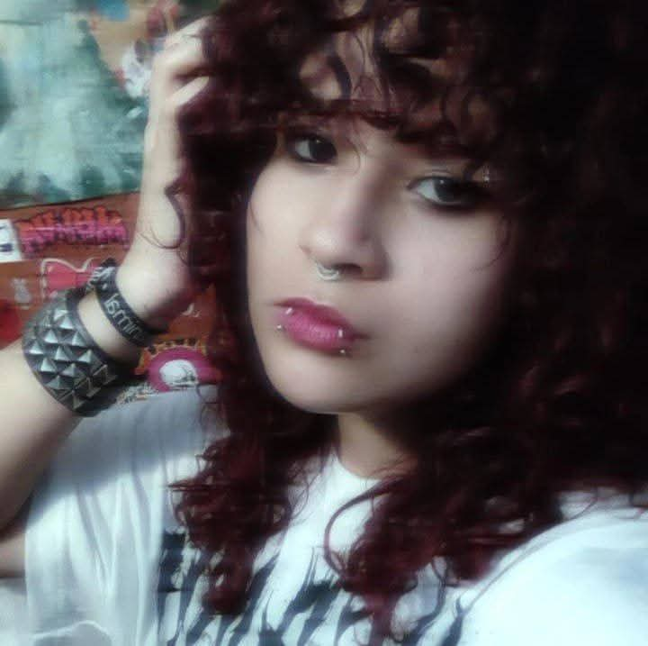

| Nombre | Apellido |
|---|---|
| Samuel | Castro |
Me llamo Sam, tengo 20 años y estudio en la universidad la carrera de Artes y comunicaciones digitales como foraneo, siempre eh querido dedicarme a las artes, en mis pasatiempos me gusta mucho dibujar, practicar artes escenicas y cocinar, me gustan mucho los animales, en especial los perros, animales marinos y los ratones. Me gusta mucho reflejar mi estilo en la ropa y en accesorios, tiendo a ser una persona callada y tranquila, alguien positivo, alegre, desordenado, y dispuesto a aprender de todo y de los demás.